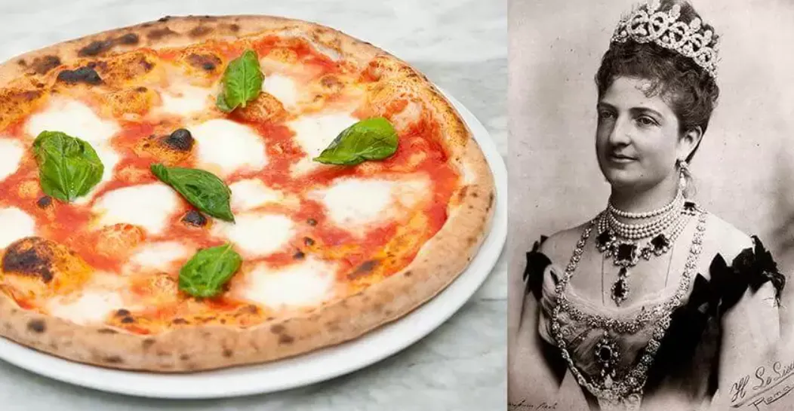
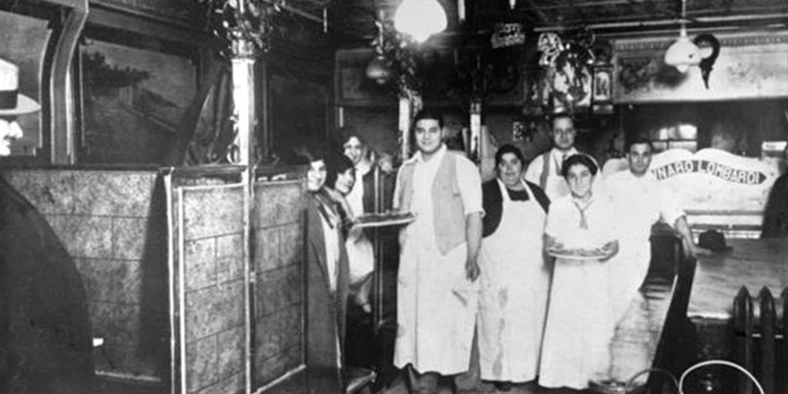
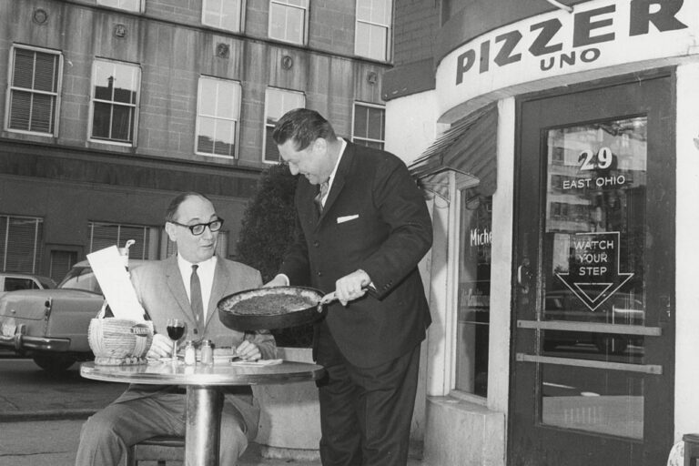
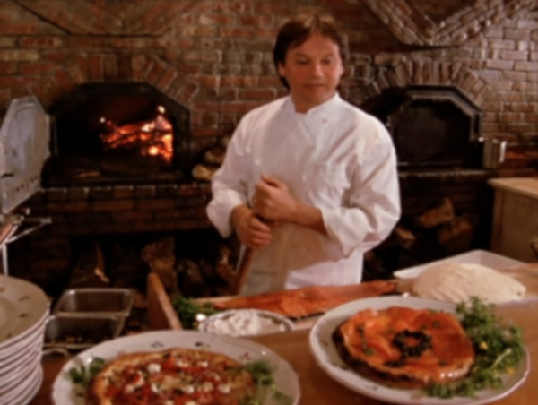
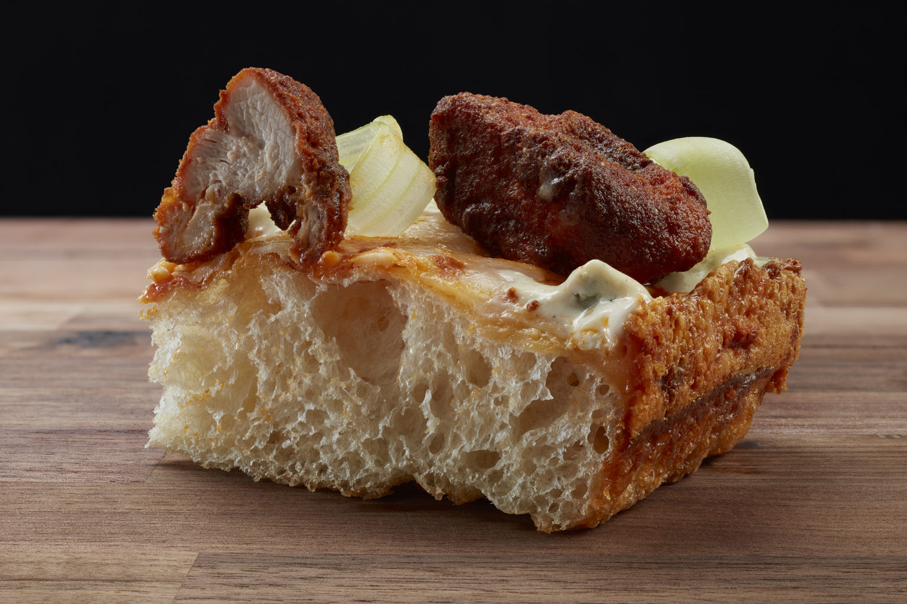

"Pizza, as we know it today, originated centuries ago in Naples, Italy."
Encyclopaedia Britannica
-

1800s, The Neapolitan Roots
Naples, Italy
While flatbreads with toppings existed earlier, modern pizza was born in Naples, Italy, during the 18th and 19th centuries. Originally sold as affordable street food for the working class, it gained royal status in 1889 when Chef Raffaele Esposito created the Margherita to honor the Queen of Italy.
-

Early 1900s, The Great Migration to New York
New York City, USA
At the turn of the 20th century, Italian immigrants brought their recipes to the United States, leading to the 1905 opening of Lombardi’s in Manhattan. This birthed the "New York Style" slice: large, thin, and foldable, baked in coal-fired ovens to accommodate the fast-paced lifestyle of city workers.
-

1940s, Post-War Expansion
Chicago, USA
After World War II, returning soldiers who had enjoyed pizza in Europe created a massive demand that pushed pizza across the American Midwest. This era saw the rise of the "Deep Dish", a thick, buttery "pie" baked in a pan that turned pizza into a hearty, sit-down meal rather than a quick snack.
-

1980s, The California Revolution
California, USA
In the 1980s, chefs like Ed LaDou and Wolfgang Puck revolutionized the dish by introducing California Style pizza. They swapped traditional pepperoni for "gourmet" toppings like barbecue chicken, goat cheese, and smoked salmon, proving that pizza could be high-end culinary art.
-

Present Day, Global Fusion and Modern Technique
Worldwide
Today, pizza is a universal canvas, ranging from artisanal sourdough crusts to regional fusions like Brazilian dessert pizzas or Japanese mayo-topped pies. With the rise of high-tech delivery apps and rapid-fire portable ovens, the "perfect slice" is now accessible in nearly every corner of the globe.